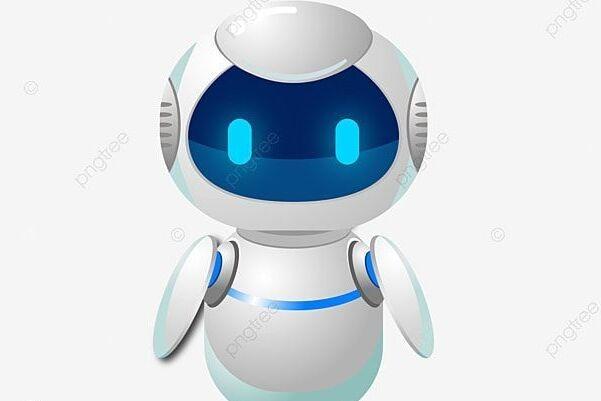

Blog
-
 AI dan Masa Depan Teknologi
Kecerdasan Buatan (AI) terus berkembang, mengubah cara kita bekerja, belajar, dan berinteraksi dengan dunia. Dari chatbot pintar hingga sistem otomatisasi industri, AI menjadi tulang punggung inovasi modern. Namun, dengan kemajuan ini, muncul pula tantangan etika dan keamanan. Bagaimana manusia bisa memanfaatkan AI tanpa kehilangan kendali atas teknologi ini? Masa depan AI adalah tentang keseimbangan antara kemajuan dan tanggung jawab.
-
Kode sebagai Seni Digital
Pemrograman tidak hanya tentang logika dan algoritma—ia juga merupakan bentuk seni. Seorang programmer merancang sistem yang efisien, menciptakan pengalaman visual dalam UI/UX, dan membangun dunia digital dengan kreativitasnya. Sama seperti seniman yang menciptakan karya dengan kuas dan warna, seorang developer mengubah ide menjadi baris-baris kode yang berfungsi. Kreativitas dalam coding membawa inovasi, membuat teknologi semakin intuitif dan menarik.
-

Spiritualitas di Era Digital
Teknologi berkembang pesat, tetapi apakah manusia semakin terhubung dengan dirinya sendiri? Di era digital, spiritualitas menghadapi tantangan baru. Aplikasi meditasi, komunitas daring, dan filosofi digital memberikan cara baru untuk mencari makna dan ketenangan. Namun, kebisingan informasi juga bisa menghambat refleksi diri. Bagaimana kita menyeimbangkan kehidupan digital dengan pencarian spiritualitas yang lebih dalam? Jawabannya terletak pada kesadaran dan kontrol diri.
-

Visualisasi Data yang Menarik
Data bukan sekadar angka—ia memiliki cerita yang perlu disampaikan dengan cara yang menarik. Visualisasi data membantu menyederhanakan informasi kompleks agar lebih mudah dipahami. Dengan diagram interaktif, infografis kreatif, dan teknik presentasi yang efektif, data bisa menjadi alat komunikasi yang kuat. Seiring perkembangan AI dan analitik, masa depan visualisasi data akan semakin dinamis, memungkinkan informasi tersaji dengan lebih jelas dan berdampak.